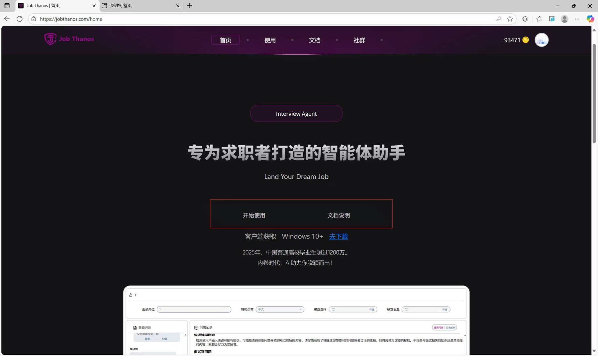
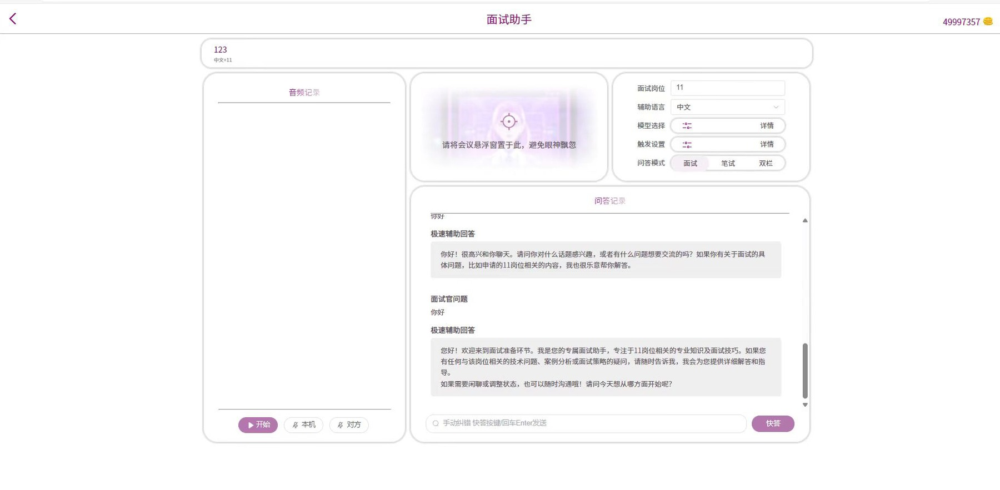
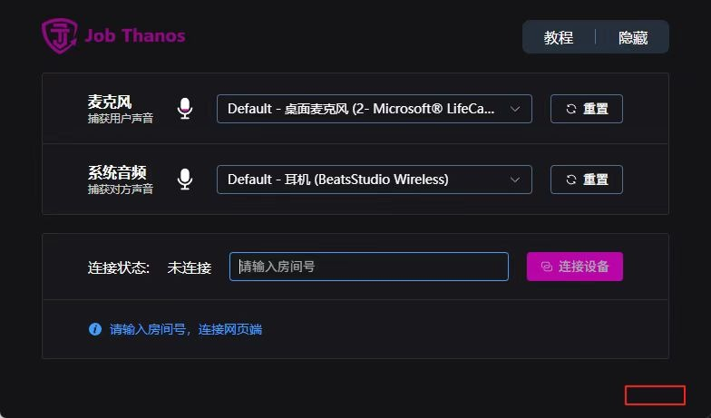

AI 产品经理（Agent 方向）· 产品调研与方案设计
产品判断
2024 年我在海外读本科，身边同学都在为求职面试发愁。我自己也一样——很多人不是没有项目经历，而是不知道怎么把经历讲成面试官听得懂、信得过的故事：写在简历上还行，一开口就逻辑乱、答不到点、被追问就露怯。
传统解法都不好用：找真人陪练，一小时几百块还约不到对口的；刷题库，问题是死的，不会顺着你的简历和上一句回答继续深挖。所以我判断这个赛道真正的空白不在"题多不多"，而在"能不能实时、动态、针对你"。我把这个想法带进朋友公司的智能体平台，成了首批孵化产品之一。
AI 扮演稳定的面试官，读你的简历和目标 JD，提问、听你语音回答、顺着回答追问，最后给结构化评分和改进建议。
真实面试进行时，同时捕获你的麦克风和对方的系统音频，实时转写、判断哪句是面试官在提问，秒速给出回答思路。
两个模式共享同一套底座（简历/JD 理解、语音转写、LLM 编排、结构化输出）——不做两个产品，做一个能力底座上的两种交互。

核心架构判断
实盘辅助有一个残酷的延迟预算：面试官话音一落，留给我的窗口只有大约一秒。人正常对话的轮次间隔本就在两百毫秒量级，超过一秒对方就觉得你在卡壳；延迟大到几秒，不只是尴尬，是会直接暴露你在用工具。
所以我把整条链路切成冷、热两条路径——贵的、慢的、要联网的活全部前置到面试前，面试中只留最短的那条路。
冷路径
面试前 · 慢无所谓
能提前算的，全部提前算
解析简历 + JD → 判定技术领域 → 联网拉这个领域的术语表 → 排序截断 → 灌进语音识别当热词，同时备好结构化画像、可深挖项目、短板与评分标准。
热路径
面试中 · 每毫秒都算
不联网、不重新解析、不重读整段对话
转写 → 拼一个尽量短的 prompt → 流式吐答案。中间结果先渲染出来降低感知延迟，稳定结果再定稿。
这条线一立起来，后面每个设计都不是孤立功能，而是同一个原因的产物。
领域词表为什么必须前置——面试中现场联网查词等于自杀。为什么把关键状态抽成结构化字段——热路径要短。为什么「最近几轮留原文、更早的做摘要」——省 token 是次要的，主要是在抢首字延迟：输入越长，第一个字吐出来越慢。为什么要有「快答」按钮——给用户一个手动重触发，不必等系统判完静音。
「面试官话音一落，我只有大概一秒。」延迟，是这个产品的第一约束
热路径 · 以及那个桌面音频桥
实盘辅助要同时听「你」和「面试官」。你的麦克风好办，浏览器能拿到。但面试官的声音是会议软件放出来的系统音频，浏览器采不到——网页的采集入口一个只给麦克风，另一个只能「分享某个标签页/屏幕」、系统音频还是「提示而非保证」且平台受限。要抓「扬声器正在播的声音」，必须走操作系统级接口，而那是浏览器沙箱够不到的。
所以解法是：一个极轻量的 Windows 桌面件专职采集，再用一个「房间号」把音频桥回网页端。这一笔我特别想讲——它证明我们看懂了这个硬约束，并且清楚产品主体该在网页，桌面端只做它非做不可的那一件事。而且「本机 / 对方」是两条物理声道，天然就是说话人身份，比事后做声纹分离更稳也更快。


商业结果
产品完成上线：能输入简历与 JD、语音交互、实时转写、多轮追问与结构化反馈；支持面试 / 笔试 / 双栏模式，模型可选、触发可设、转写可纠错。商业化没有跑通，产品后来下线。
事后复盘：不是技术不行，是我们对「需求强度」和「付费意愿」判断过于乐观。「求职焦虑」是真痛点，但它低频（只在面试前那几天焦虑，用完就走，订阅制天然错配）、信任门槛极高（把面试成败托付给一个工具，还有被发现的风险）、极度同质化（核心就是大模型 + 转写 + 悬浮窗，谁都能做）。三者叠加的结果是：这个品类极容易转化成注意力，极难转化成经常性收入。
所以真正的解法不是继续堆功能，而是换买家、换场景——去找有人愿意报销、且能高频复用的工作流。痛点强、需求强、付费意愿强，三者之间隔着两条鸿沟，每一条都要单独验证。
它是我用 Agent 的方式理解世界的起点。
这段经历第一次把一组 Agent 产品问题连在一起：怎么切职责、怎么管上下文、怎么让输出可控、怎么把主观评价标准化、怎么在延迟约束下做架构取舍。后来做 AI 驾驶行为检测与 AI 基础设施产品时，我一直沿着这组问题继续往下走。